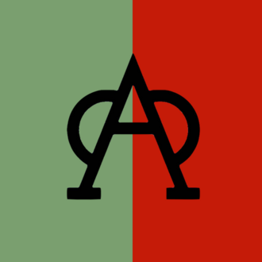
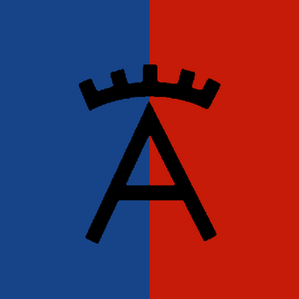
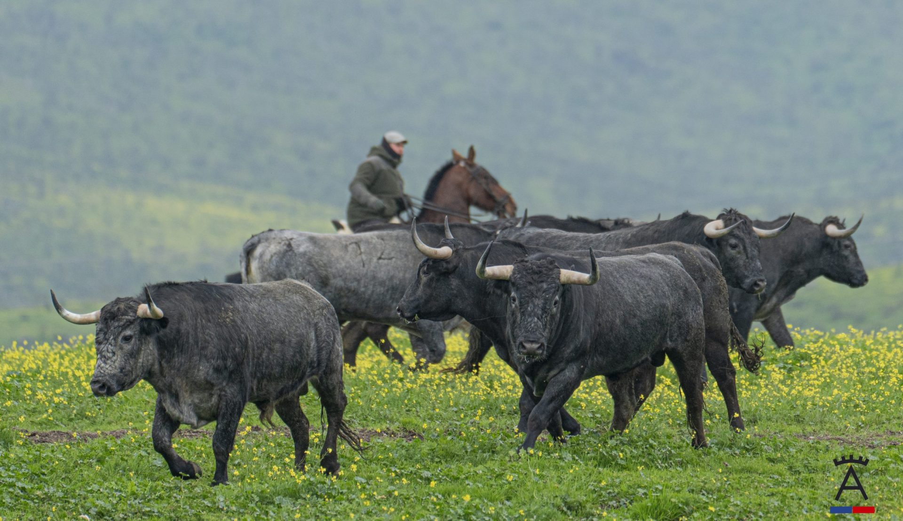
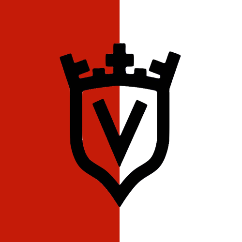

Ganaderías más conocidas
Una ganadería de toros de lidia es una explotación dedicada a la crianza y selección de estos animales.
Estos ejemplares crecen en régimen de semillibertad en la dehesa, un ecosistema único y sostenible donde
disponen de grandes extensiones de terreno para alimentarse de manera natural durante varios años antes
de llegar al ruedo.
Miura (La leyenda)


Es una de las ganaderías más antiguas y conocidas de España. Fue fundada en 1842 y sus toros son
conocidos
por su gran presencia y sus características particulares. Los toros de esta ganadería están
definidos por
una morfología espectacularmente grande que impone mucho respeto, teniendo ejemplares que llegan a
pesar
más de 650 kilos. El peligro de estos animales radica en su enorme sentido y memoria.
Victorino Martín


Es una ganadería muy reconocida por sus toros y por su importancia en la historia de la tauromaquia
española.
Este tipo de toro es un animal compacto, mucho más bajo y de finas líneas, pero dotado de una enorme
fiereza
y capacidad para humillar con fijeza y emoción.
Juan Pedro Domecq


El referente del "toro artista". Su morfología está seleccionada minuciosamente para favorecer la
máxima
plasticidad en la embestida y la compenetración con el torero. Destaca por su clase y nobleza.
Fuente Ymbro


Fundada por Ricardo Gallardo. Su sello es la casta, la movilidad vibrante y la transmisión. Exigen a
los
toreros una colocación perfecta y firmeza.
Tipos de encaste
Un encaste es una línea genética dentro del ganado bravo que comparte determinados orígenes y
características físicas.
| Tipos |
Características |
| Miura |
Conocido por sus características físicas particulares y su origen histórico. |
| Domecq |
Uno de los encastes más extendidos en las ganaderías actuales. |
| Santa Coloma |
Destaca por su origen histórico y por presentar animales de menor tamaño. |
| Albaserrada |
Conocido por sus características físicas y su importancia dentro del campo bravo. |